|
Avaliao
geral
A primeira temporada de Deep
Space Nine surpreendentemente boa. claro que
existem problemas, mas parece existir um senso de direcionamento
para a srie e, principalmente, de construo de uma
identidade prpria, tanto em forma quanto em contedo.
Em termos de forma, DS9 desde o seu incio se
notabilizou por ser uma srie muito mais "orientada a
elenco" (incluindo a no somente o elenco regular, mas o
recorrente tambm) e "orientada a personagens" do que
suas antecessoras (Srie Clssica e A
Nova Gerao).
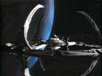 J
em termos de contedo, a longa ocupao de Bajor (um povo de
antiqussima cultura e profunda espiritualidade) por Cardssia,
a retirada de Cardssia de Bajor (e a posterior relao poltica
entre Bajor-Cardssia-Federao) e a chegada da Federao
para ajudar na reconstruo do planeta recm-desocupado
oferecem uma verdadeira infinidade de temas com deliciosos
"tons de cinza".
Deste contexto e de temas baseados nos dilemas pessoais dos
personagens saram os melhores momentos do primeiro ano da srie.
Existiram dois grandes problemas nesta temporada. O primeiro a
quase total falta de um contedo de "Sci-Fi" original e
realmente interessante. exceo do inesquecvel encontro de
Ben Sisko com os "Profetas" em "Emissary",
estivemos muito mal servidos neste departamento, algo entre o
"totalmente no inspirado" e o "totalmente
imbecil".
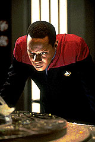 Outro
grande defeito "detectado" por boa parte dos fs de
Jornada foi a falta de preocupao em transformar o personagem
de Ben Sisko em uma figura "maior que a vida". Ainda alm,
muitos igualaram o estilo "professional & cool" que
Brooks imprimiu ao personagem a "total falta de paixo".
Acredito que muitos dos sentimentos negativos que as pessoas tm
para com essa temporada advm destes dois fatores: um quociente
insuficiente de "Sci-Fi" de qualidade e a falta da
figura de um protagonista "apaixonante e apaixonado" e
"maior que a vida".
Altos
Entre os melhores momentos desta
temporada temos a arrepiante alegoria do holocausto em "Duet",
a jornada de auto-entendimento de Ben Sisko em "Emissary",
relevantes discusses religiosas e filosficas em "In
The Hands Of The Prophets", Kira lidando com um
difcil conflito pessoal em "Progress",
um vislumbre do lado mais sombrio do ser humano em "Battle
Lines" e o essencial episdio
de Dax, que leva o nome da personagem.
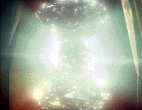 Um
pouco mais atrs temos uma divertida pardia do crime organizado
(utilizando os Ferengis) em "The
Nagus", um primeiro mergulho nas motivaes
pessoais de Odo (apesar de uma sub-trama de ao meio esquecvel)
em "Vortex"
e Kira tendo sua lealdade testada em "Past
Prologue".
Dentre as premissas de "Sci-Fi" que, apesar da pouca
originalidade, funcionaram devido a boa execuo temos "Captive
Pursuit" e "Babel".
Baixos
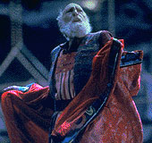 Dentre
os piores momentos temos essencialmente exemplares de
"Sci-Fi" de m qualidade e um bocado de
"tecnobaboseira": a "matriz teleptica que revive
uma antiga disputa de poder usando os personagens como
marionetes" em "Dramatis
Personae", a "tentativa de incriminar um
antigo desafeto utilizando o assassinato do prprio clone"
em "A
Man Alone", a "arraia aliengena
rebocadora de estaes espaciais" em "Q-Less",
a "imaginao da tripulao ganhando vida prpria"
em "If
Wishes Were Horses", o "programa de
computador aliengena que toma o controle do computador da estao
e que ao final do episdio compreendido como uma diferente
'solitria forma de vida'" em "The
Forsaken" , o "contador de histrias que
afasta os maus espritos" em "The
Storyteller", a "entidade maligna capaz de
possuir corpos" em "The
Passenger" e "um jogo em que as peas
representam (e de fato so) os personagens" no abominvel
"Move
Along Home".
Notas
finais
A equipe de roteiristas foi formada
por Michael Piller, Ira Steven Behr, Peter Allan Fields e Robert
Hewitt Wolfe (a partir de "Q-Less").
Sugestes de histrias e roteiros foram escritas tambm por
velhos conhecidos, tais como Rick Berman, David Livingston, Naren
Shankar, Morgan Gendel, Joe Menoski, D.C. Fontana e por
"free-lancers".
Personagens como Q (da forma com usado em "Q-Less"),
Vash e Lwaxana Troi (que, para meu desespero, acabou aparecendo
mais duas vezes durante a srie, uma pior do que a outra)
mostraram que no tm lugar em DS9.
Joe Menoski tambm est muito fora do seu elemento em DS9
(ele tambm infelizmente escreveu mais para a srie
posteriormente, novamente no conseguindo quebrar a barreira da
mediocridade). Porm as irms de Duras foram postas para bom uso
em "Past
Prologue" e a utilizao dos Borgs em "Emissary"
foi simplesmente brilhante.
Personagens
Regulares
Benjamin Lafayette Sisko (Avery
Brooks)
Patente: Comandante
Posto: Comandante de Deep Space Nine
Entre sua jornada de
auto-entendimento em "Emissary"
e sua bela presena em "In
The Hands Of The Prophets", descobrimos,
surpreendentemente, muito pouco sobre o comandante de DS9.
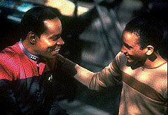 Seu
imbatvel relacionamento com Jake esteve presente (bem como um
verdadeiro sentimento mtuo entre ele e Jadzia, para que a sua
amizade sobreviva mudana de hospedeiros), mas no geral o
personagem foi pouco desenvolvido.
Odo (Ren Auberjonois)
Posto: Chefe de Segurana
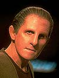 Observamos
nesta temporada seu senso de decncia, seu senso de justia, sua
extrema capacidade profissional, suas afiadas observaes sobre
a condio humana, seu orgulho e tambm seu lado mais frgil,
sua solido e sua intimidade.
Seu relacionamento com Kira promete se tornar um dos mais
fascinantes da srie e as suas "brigas" com Quark
tornaram-se ao longo do caminho uma das marcas registradas da srie.
Julian Subatoi Bashir (Siddig El
Fadil)
Patente: Tenente de Segunda Classe
Posto: Oficial Mdico Chefe
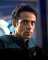 Ele
jovem, inexperiente, idealista e incrivelmente brilhante, o que
se traduz em uma caracterizao frentica em termos de falatrio
e ingenuidade, com picos de absurda e divertida arrogncia.
O personagem tambm demonstrou poder ser bem usado em situaes
mais dramticas como em "Battle
Lines" e "Duet".
Claros pontos negativos foram seus excessivos flertes com Dax.
Sua "qumica" com Garak se mostrou vencedora desde a
estria em "Past
Prologue", porm sua primeira experincia com
O'Brien no foi to feliz, em "The
Storyteller".
Jadzia Dax (Terry Farrell)
Patente: Tenente de Primeira Classe
Posto: Oficial de Cincias
Uma caracterizao de paz e
harmonia (como sugerida em "Emissary")
e apresentada ao longo da temporada me parece inadequada frente
drstica mudana que a unio com o simbionte deve ter trazido
para sua vida.
Este tipo de atitude teve como extremo Jadzia "bancando o
Yoda" para Bashir em "A
Man Alone". Mesmo aceitando esta caracterizao,
eu ainda teria problemas com a sua execuo, to semelhante a
da caracterizao vulcana (reparem na posio dos braos
sempre s costas).
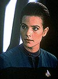 Um
outro motivo de frustrao que eu sou extremamente fascinado
pelos Trills enquanto raa (especialmente sobre a sua perspectiva
da sexualidade) e o seu uso nesta temporada tambm no foi
suficientemente interessante.
Embora o episdio "Dax"
tenha nos oferecido vrios detalhes do passado de Curzon Dax,
falhou em nos falar algo mais sobre Jadzia Dax, de fato o
personagem mais problemtico desta temporada de estria.
Jake Sisko (Cirroc Lofton)
O meu nico real problema com Jake
nesta temporada foi que Cirroc Lofton ainda estava um pouco
pequeno e novo demais para o papel, nada alm disto.
O relacionamento entre Ben Sisko e Jake Sisko uma das marcas da
srie e as cenas entre os dois sempre funcionam
em termos de qualidade dramtica, qumica e realismo (para todos
os fins prticos, Jake realmente filho de
Ben).
O outro parceiro de Jake nesta temporada e ao longo da srie
Nog, geralmente com bons resultados, sendo o melhor momento dos
dois nesta temporada a trama secundria de "Progress",
com um tipo de humor que posteriormente seria utilizado em outros
episdios ao longo da srie.
Miles Edward O'Brien (Colm Meaney)
Posto: Oficial de Operaes
Como um personagem j conhecido de A
Nova Gerao (assim como Keiko e Molly), O'Brien leva
uma vantagem sobre os demais.
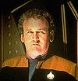 Alm
da melhor caracterizao do seu desgosto pelos Cardassianos
(estabelecido j na srie anterior), o qual data de sua
participao nas guerras de fronteira entre Cardssia e a
Federao, pouco se descobriu a mais sobre o personagem.
O'Brien notabilizou-se nesta temporada (e no decorrer da srie)
como um "Homen-Comun" (ou um "Homen-Famlia")
com o qual qualquer um poderia se identificar.
Desta temporada datam as qualidades de O'Brien como um fazedor de
milagres, capaz de compatibilizar tecnologias totalmente
diferentes e desenhar (e batizar), em sua mente, equipamentos
inexistentes para tarefas de campo sob grande presso. Seu maior
veculo na temporada foi "Captive
Pursuit".
Sua mulher Keiko foi posta para bom uso como professora e a escola
teve papel importante em alguns episdios, especialmente em "In
The Hands Of The Prophets" e sobre sua filha
Molly s posso falar que ela "bonitinha".
Quark (Armin Shimerman)
Barman da estao
Quark entrou para a histria como o
primeiro Ferengi de Jornada nas Estrelas com uma
real personalidade (um pouco rasa, devo admitir). Geralmente posta
para bom uso, sua caracterizao oscila entre o "alvio cmico"
e o "trambiqueiro atrapalhado".
Ao lado de Odo e Kira, foi um dos trs personagens com a
caracterizao inicial mais consistente.
Seu irmo Rom (Max Grodnchick) essencialmente um idiota (o
que no mudou ao longo da srie), com a estabilidade psicolgica
e emocional de uma criana de cinco anos, mas com um incrvel
talento para consertar (e mesmo conceber e projetar) coisas.
Seu sobrinho Nog (Aron Eisenberg) nesta temporada se resume bem ao
"parceiro de Jake". Zek (Wallace Shawn) teve uma boa
estria em "The
Nagus" com o seu "cabide particular"
Maihar'du (Tiny Ron).
Kira Nerys (Nana Visitor)
Patente: Major da Milcia Bajoriana
Posto: Primeiro-oficial de Deep Space Nine
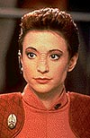 Os
temas mais relevantes desta temporada vieram do planeta Bajor (de
sua poltica e filosofia). Como personagem principal
representante (via microcosmo) do povo Bajoriano, Kira Nerys foi o
personagem melhor desenvolvido desta temporada.
Com a apaixonada presena de Nana Visitor (para registro:
provavelmente a melhor atriz da histria de Jornada nas
Estrelas), o personagem brilhou em um arco crvel e
muito bem escrito, composto principalmente (mas no somente) por:
"Emissary",
"Past
Prologue", "Battle
Lines", "Progress",
"Duet"
e "In
The Hands Of The Prophets".
Recorrentes
fascinante ver como a caracterizao
de personagens recorrentes (muitos dos quais continuaram
aparecendo at o ultimo episdio da srie) foi consistente
desde o primeiro dia.
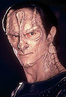 Dukat
(carismtico e arrogante adversrio), Garak (misterioso e ambguo),
Winn (condescendente e sedenta por poder), Bareil (uma figura
religiosa nobre e progressista) e mesmo Zek (como lder da
sociedade em que as virtudes so nossos defeitos) e Maihar'du (o
criado particular de Zek) j se encontram extremamente bem
caracterizados nesta temporada de estria.
O mesmo no pode ser dito de Rom, que iniciou a srie com uma
caracterizao extremamente adversria, similar dos Ferengis
de A Nova Gerao, o que "respingou"
tambm na caracterizao do seu filho Nog.
Entretanto, esse problema est essencialmente confinado ao
primeiro episdio em que os dois efetivamente aparecem, "A
Man Alone".
Produo
Produtor de Campo:
Robert Della Santina (incorporado durante a temporada)
Co-produtor: Peter Allan Fields
Produtor: Peter Lauritson
Produtores Supervisores: David Livingston e Ira
Steven Behr
Produtores Executivos: Rick Berman e Michael
Piller
Produtor Associado: Steve Oster
Elenco: Junie Lowry-Johnson e Ron Surma
Msica: Dennis McCarthy, Jay Chattaway etc.
Tema de Abertura: Dennis McCarthy
Diretor de Fotografia: Marvin Rush
Designer de Produo: Herman Zimmerman
Editor: Terry Kelley e Richard E. Rabjohn
Gerente da Unidade de Produo: Roberto Della
Santina
Primeiro Assistente de Direo: Venita
Ozols-Graham
Segundo Assistente de Direo: Gail Fortmuller
e B.C. Cameron
Designer de Vesturio: Robert Blackman
Diretor de Arte: Randy McIlvain
Efeitos Visuais: Robert Legato
Supervisor de Efeitos Visuais: Bob Bailey e Glenn
Neufeld
Supervisor de Ps-Produo: Terri Martinez
Supervisor-chefe de Arte/Consultor Tcnico:
Michael Okuda
Ilustrador-chefe/Consultor Tcnico: Rick
Sternbach
Decorador de cenrios: Mickey S. Michaels
Maquiador-chefe: Michael Westmore
Designer de Cenrios: Joseph Hodges e Tom Betts
Ilustrador: Ricardo F. Delgado
Coordenador de Efeitos Visuais: Sue Jones e Cari
Thomas
Supervisor de guarda-roupa: Caro Kunz
Supervisor de roteiros: Judi Brown
Efeitos Especiais: Gary Monak
Administrador de propriedades: Joe Longo
Coordenador de Construes: Richard J. Bayard
Artistas Cnicos: Denise Okuda e Doug Drexler
Designer de penteados: Candy Neal
Maquiadores: Janna Phillips, Craig Reardon e Jill
Rockow
Cabelereiros: Gerald Solomon e Ronald W. Smith
Mixagem de Som: Bill Gocke
Operador de Cmera: Joe Chess
Iluminador-chefe: William Peets
"First Company Grip": Bob Sordal
"Key Costumers": Maurice Palinski e
Jerry Bono
Editor Musical: Stephen M. Rowe
Supervisor da edio de som: Bill Wistrom
Supervisor da edio de efeitos sonoros: Jim
Wolvington
Editores de Som: Ashley Harvey, Miguel Rivera,
Dan Yale & Sean Callery, Steffan Falesitch
Coordenador da Produo: Heidi Julian
Coordenador da Ps-Produo: Dawn Hernandez
Associado de Efeitos Visuais: Cari Thomas &
Laura Lang
Associado da Produo: Kim Fitzgerald
Consultor Cientfico: Naren Shankar
Abertura: Dan Curry
Coordenador de Dubls: Dennis Madalone
Pr-Produtora: Lolita Fatjo
Executivo do elenco: Helen Mossler
Lentes & Cmeras: Panavision
Efeitos vdeo-ticos: Digital Magic
Composio especial de vdeo: CIS Hollwood
Fotografia com controle de movimento: Image
"G"
Animao por computador: Vision Art Design
& Animation
Instalaes de edio: Unitel Video
Som de Ps-produo: Modern Sound
|